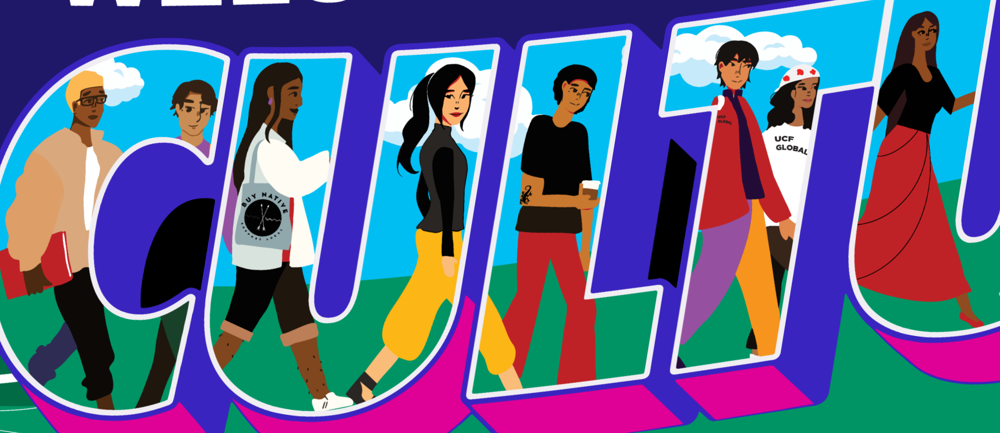
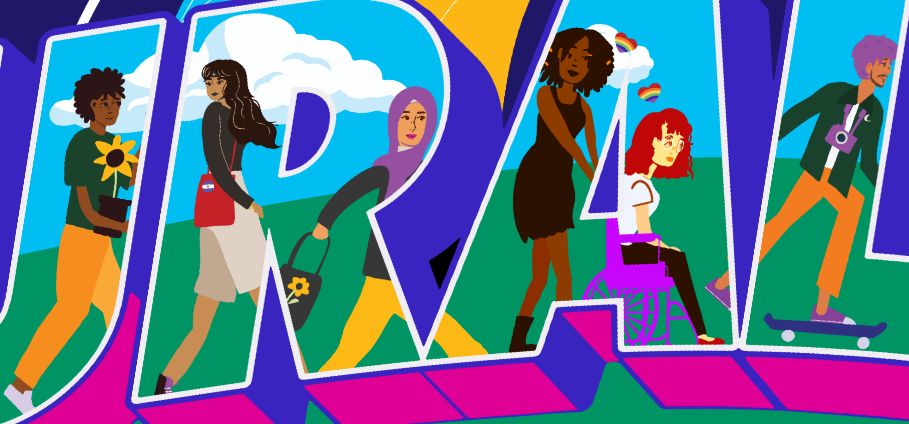
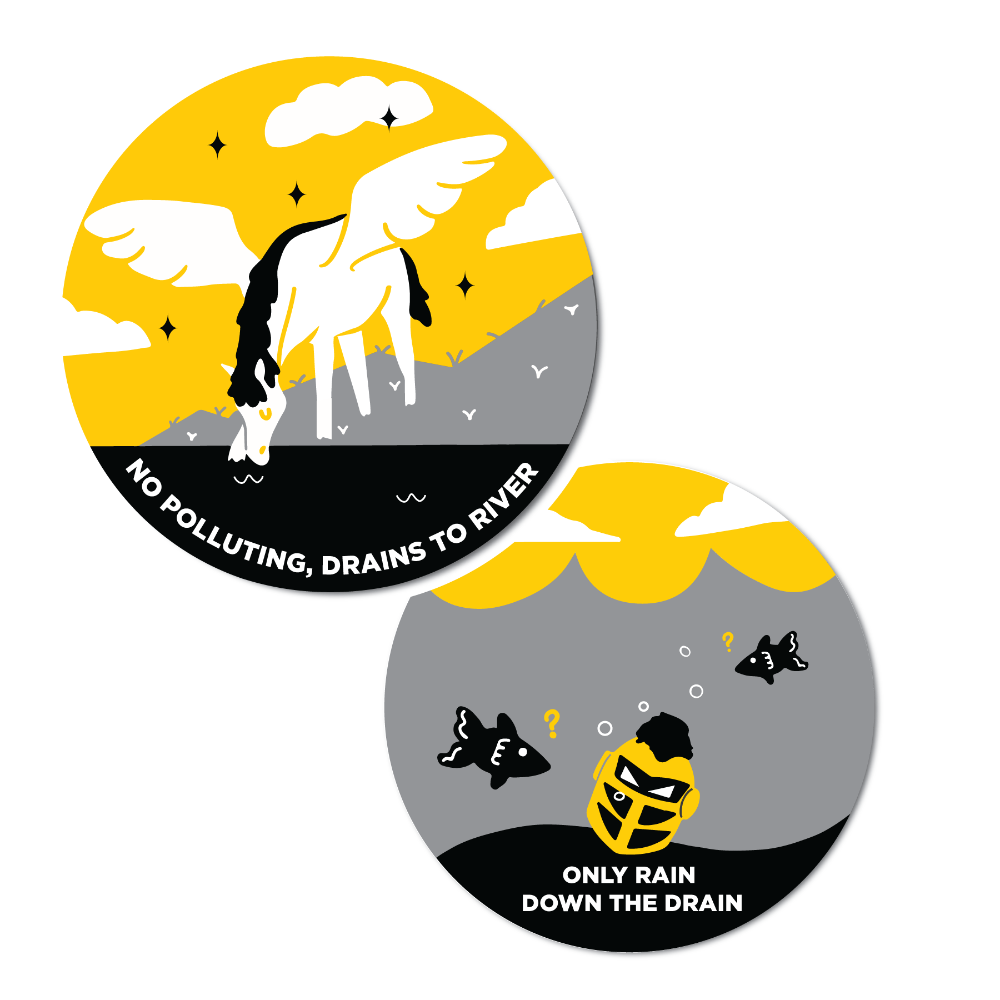

Cultural Center Mural
I won an art contest and had my design move into a collaborative design phase where I designed the lettering and characters, and another artist designed the background
What I used:
- Procreate
- Adobe Illustrator
- Adobe Photoshop
-01 2 (1).png)


Student Government and the Multicultural Student Center held a university-wide call for submissions for a student art contest. The winning design was printed as a mural and is on display in the UCF Student Union. This piece was a collaboration between myself and a graphic design alumni, Julia Thomas.


Storm Drain Signs
My drawings got turned into 200 curb inlet stickers.
The Arboretum and UCF's Utilities and Engineering Services lead the initiative, and I submitted these designs and won 🎉 The contest encouraged the use of mascots, so it was exciting to be able to use Knightro and the Pegasus for the artwork. Also, having worked in the Office of Student Involvement, I was familiar with branding guidelines, which was a requirement that if not met, the art would be subject to typeface and color changes. Character-work has always been enjoyable to me, and this is a project I'm proud of because I got to see the artwork regularly while a student.